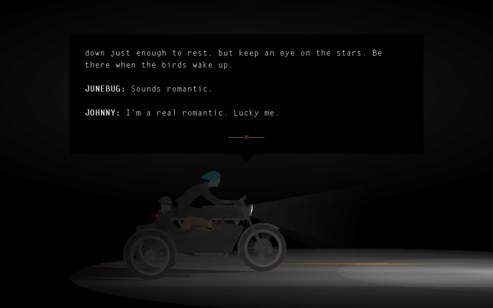

- Above is a screenshot of the game Kentucky Route Zero.
It has been a journey having this class. My journal is a bit random, mostly trigger by the key words or concepts from the class. I think I can develop a maturer idea from each part of it.
Also, I will keep on adding things in this part and modifying other parts. Stay tuned.